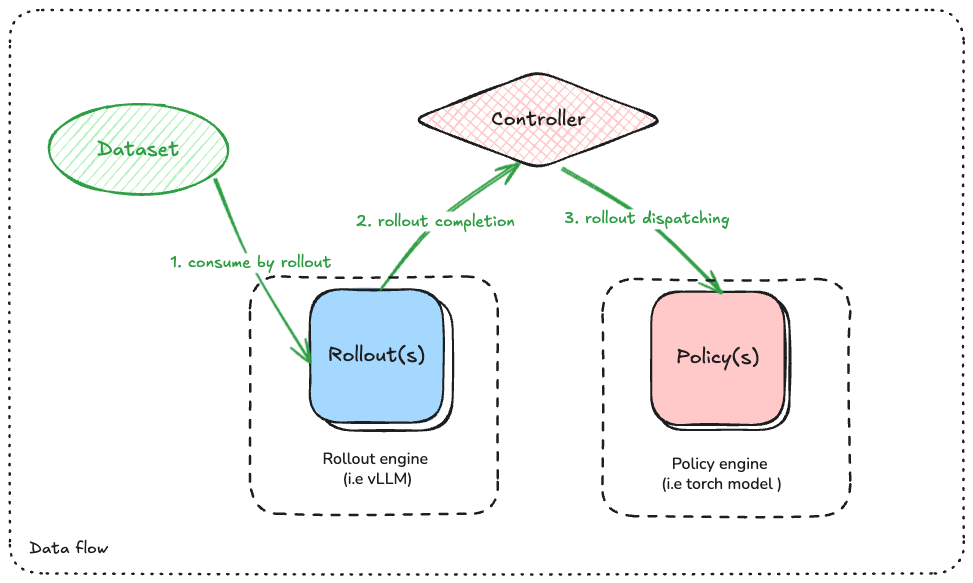

Dataset & Process
Dataflow

As the above figure shows, there are three data-flow pipelines:
- Dataset -> Rollout
In this stage, one need to define the data transformation logic from raw dataset item into what rollout engine needs. Typically the target data format is defined by rollout engine (i.e. vLLM)
- Rollout completion -> Controller:
In this stage, rollout engines finish the generation task and return the results back to controller.
- Controller -> Policy:
Importantly, cosmos-rl framework is model-agnostic. So there should be some data transformation pipeline here to ensure that the correct data format required by policy models is fed into them.
The interface of such data transformation pipeline is defined as a DataPacker class:
class DataPacker(ABC):
@abstractmethod
def get_rollout_input(self, item: Any) -> Any:
"""
Convert sample to data format required by the rollout engine (e.g. vllm)
"""
raise NotImplementedError("This method should be implemented by the subclass")
def rollout_collate_fn(self, items: List[Any]) -> List[Any]:
"""
Collate the rollout inputs into a mini-batch for rollout engine
"""
return items
@abstractmethod
def get_policy_input(
self,
sample: Any,
rollout_output: str,
) -> Any:
"""
Stage for processing samples & rollout output before collating them into a mini-batch
"""
raise NotImplementedError("This method should be implemented by the subclass")
@abstractmethod
def policy_compute_max_len(self, processed_samples: List[Any]) -> int:
"""
Compute the maximum sequence length of the mini-batch
"""
raise NotImplementedError("This method should be implemented by the subclass")
@abstractmethod
def policy_collate_fn(
self,
processed_samples: List[Any],
computed_max_len: int,
) -> Dict[str, Any]:
"""
Collate the processed samples into a mini-batch,
the output will be fed into the policy model for training
"""
raise NotImplementedError("This method should be implemented by the subclass")
get_rollout_input:Convert dataset row into the format required by the rollout engine. Typically, vLLM requires raw string as prompt input for LLM.
rollout_collate_fn:Collate the output from
get_rollout_inputinto a mini-batch for rollout engine.
get_policy_input:Convert
(dataset_row, rollout_output)into the format required by the policy model.
policy_collate_fn:Collate the output from
get_policy_inputinto a mini-batch accepted by policy model.
policy_compute_max_len:Compute the maximum sequence length of a list of processed samples. This is required by Trainer to determine the padding length of the mini-batch.
Pre-defined DataPacker
Decoder Only LLM Packer
Fortunately, cosmos-rl provides a default implementation decoder_only_llm_packer.py for Decoder Only LLMs including:
Llama
Qwen2.5
Qwen3
Qwen3-MoE
Deepseek-v3
All users need to do is to return the row of dataset as either:
str: as the raw text promptConversation List: data packer will convert the conversation list into a raw text prompt by applying the pre-defined chat template.[ { "role": "user", "content": "What is the capital of France?" }, ]
Qwen2.5-VLM Packer
We also add a qwen2_5_vlm_packer.py for Qwen2.5-VL model to demonstrate how to add support for Multi-modal LLMs/Any Customized Model.
This data packer requires the data row returned by dataset to be specific format:
[
{
"role": "user",
"content": [
{
"type": "image",
"image": "https://qianwen-res.oss-cn-beijing.aliyuncs.com/Qwen-VL/assets/demo.jpeg",
},
{"type": "text", "text": "Describe this image."},
],
}
]
Rollout and Policy would transform the above data row into the format required by the rollout and policy model.
For implementation details, check qwen2_5_vlm_packer.py.